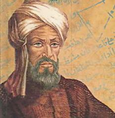
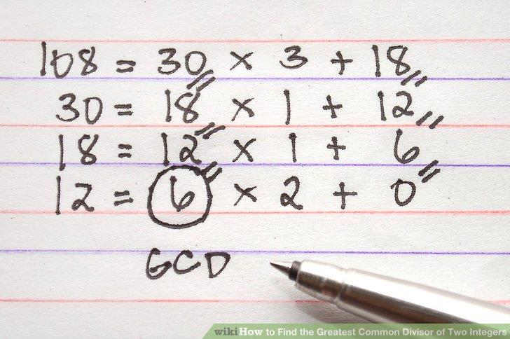
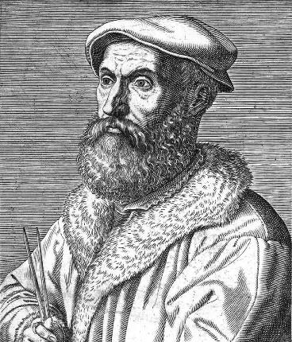
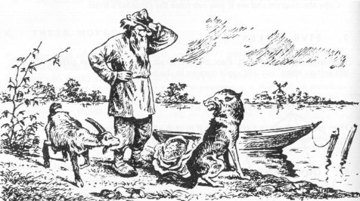
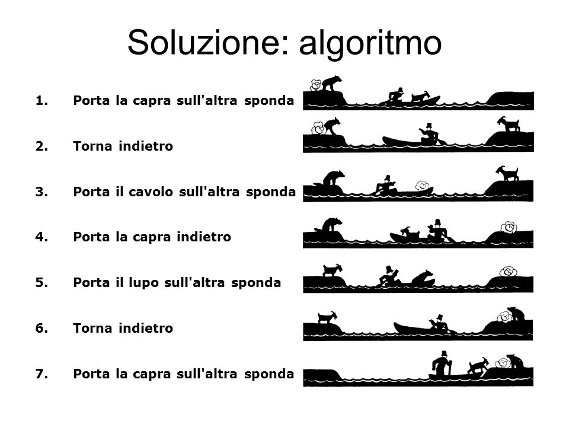

Dal nome di uno studioso a una parola universale
La parola algoritmo risale alla forma latina del nome di Muḥammad ibn Mūsā al-Khwārizmī, matematico, astronomo e geografo attivo nel IX secolo. Il riferimento geografico nel suo nome rimanda alla regione del Khwārezm, in Asia centrale.
Le traduzioni latine delle sue opere diffusero in Europa metodi sistematici di calcolo basati sulle cifre indo-arabiche. Nel Medioevo termini come algorismus indicavano soprattutto l'arte di eseguire questi calcoli.
Passaggio storico: il significato si è allargato. Da “procedimento per fare calcoli con le cifre” si è arrivati a “procedimento preciso ed eseguibile per trasformare dati o risolvere una classe di problemi”.

Una storia più antica della parola
Gli esseri umani descrivevano procedure ripetibili molto prima che esistesse il termine moderno. Ricette di calcolo, metodi geometrici e tecniche amministrative erano trasmessi come successioni ordinate di operazioni.
- Procedure aritmetiche e geometriche vengono annotate e insegnate; l'algoritmo di Euclide ne è un esempio celebre già incontrato nel corso.
- Al-Khwārizmī raccoglie e sistematizza metodi di calcolo e algebra nel mondo islamico.
- Le traduzioni latine diffondono metodi e numerazione indo-arabica in Europa; nasce la famiglia di parole da cui deriva algoritmo.
- Le procedure di calcolo diventano sempre più formalizzate e vengono affidate anche a macchine meccaniche.
- Logici e matematici cercano una definizione rigorosa di “procedimento calcolabile”, preparando la nascita dell'informatica teorica.
Tre trasformazioni del concetto
Da caso singolo a metodo generale
Il valore non sta nel risultato di un solo calcolo, ma nelle regole applicabili a tutte le istanze ammesse.
Da sapere personale a descrizione
Il procedimento deve poter essere comunicato, controllato e ripetuto da un altro esecutore.
Da esecutore umano a macchina
Quando ogni passo è elementare e non ambiguo, l'esecutore può essere anche un dispositivo automatico.
Algoritmo, rappresentazione, esecutore: lo stesso metodo può essere espresso in linguaggio naturale, pseudocodice, diagramma o programma. Cambia la forma; deve restare invariata la logica del procedimento.
Il raccordo con le pagine già studiate
Il primo PDF prosegue con MCD, algoritmo di Euclide e problema del contadino. Questi argomenti sono già sviluppati nelle lezioni 1.2 e 1.4, quindi qui non vengono ripetuti.
Apri la galleria delle immagini presenti nel PDF



